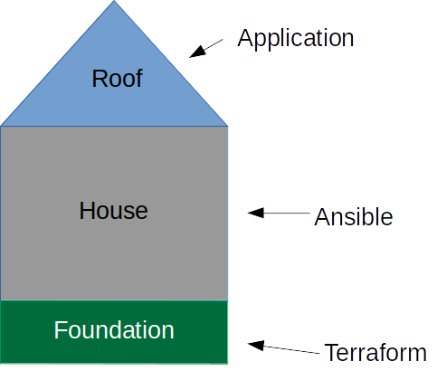

DevOps
找了一个关于devops的文章，想看看详细的实践是怎么做的。
from: https://medium.com/@devfire
https://medium.com/@devfire/how-to-become-a-devops-engineer-in-six-months-or-less-part-2-configure-a2dfc11f6f7d
基础
https://medium.com/@devfire/how-to-become-a-devops-engineer-in-six-months-or-less-366097df7737
基础列的就是三部分:Linux, Python 以及 AWS.
然后六个部分：
configure配置：Terraform - Ansible
Version版本：Git+GitHub - GitLab
package包:Docker - Lambda
Deploy部署:Jenkins - codeDeploy
Run运行:ECS - Kubernetes
Monitoer监控：ELK Stack - Prometheus
configure 配置
https://medium.com/@devfire/how-to-become-a-devops-engineer-in-six-months-or-less-part-2-configure-a2dfc11f6f7d
配置就是将机器配置好基础设施来让代码运行。以前的话可能是一步一步的安装，而新的方法是将基础设施也编码(infrastructure-as-code).这也是这个阶段需要做的事情。
作为最佳实践，基础设施作为代码要求提供计算资源所需的任何工作都必须通过代码来完成。
计算资源是指：计算，存储，网络，数据库等等。
在Devops中，我们将会：
- 在Terraform中填写我们需要的设施
- 将它保存在我们源代码管理中
- 通过一个PR来获取反馈
- 测试
- 执行用来提供所有需要的资源。

同时Ansible可能后面会慢慢淘汰，因为 immutable deployments的推行。所有的环境配置都是一致的无需改变的。
怎么开始： Terraform+AWS 套餐可以看下。
版本version
使用git进行版本控制。
最少你应该精通以下：
- Fork一个仓库
- 创建分支
- 从upstream中合并改变，并且回来
- 创建一个Pull Requests。
打包 Package
https://medium.com/@devfire/how-to-become-a-devops-engineer-in-six-months-or-less-part-4-package-47677ca2f058
虚拟化技术可以节省等待时间并且更快部署。
Docker
Docker就是基于一个很久以前的想法：在同样的操作系统中对每个单独的进程进行隔离。这不是’full virtualization’:在同一物理主机上并行运行虚拟机。
Docker 是和微服务同步兴起的，它可以解决不同的app有环境冲突的问题。比如python，java应用需要的环境配置都是不一样的。
Lambda
运行Docker仍然是运行服务器，服务器都是易碎，脆弱的。他们都需要被管理，打补丁等等。
同时Docker并不是100%安全的。运行容器托管的大公司都是在虚拟机中进行的而不是在裸机上运行，这样可以获得虚拟机的安全性和容器的快速。
最后，没有人只是运行Docker。大部分都是将它作为一个复杂容器编排结构的一部分。
AWS lambda允许您在不设置或管理服务器的情况下运行代码。您只需支付您所花费的计算时间-当您的代码没有运行时，不收取任何费用。
这尼玛是广告吧。。。
但是这个环境怎么实现的？？可以看看。。serverless嘛。。